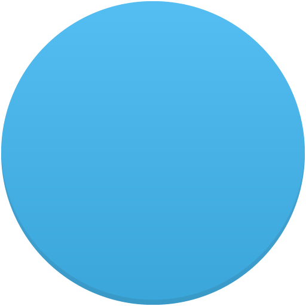

<!DOCTYPE html>
<html lang="en">
<head>
<title>Miniature Earth | Hologram Demo</title>
<meta charset="utf-8">
<meta name="viewport" content="width=device-width">

<link rel="stylesheet" href="hologram/style.css">
<script src="../miniature.earth.core.js"></script>

	
	
		<style>
	a.tooltip {outline:none; }
a.tooltip strong {line-height:30px;}
a.tooltip:hover {text-decoration:none;} 
a.tooltip span {
    z-index:10;display:none; 
    margin-top:-175px; margin-left:-250px;   
}
a.tooltip:hover span{
    display:inline; position:absolute; 
}

.callout {z-index:20;position:absolute;border:0;top:-34px;left:120px;}
    
/*CSS3 extras*/

</style>
	
	
	
	
	
	
	
	
	
	
	
	
<script>

if ( location.protocol == 'file:' ) {
	alert( 'This demo does not work with the file protocol due to browser security restrictions.' );
}


var myearth;
var sprites = [];

window.addEventListener( 'load', function() {

	
	
	
	
	
	
	
	
	
	
	
	
	
	
	
	
	
	
	
	
	
	
	
	
	
	
	
	
	
	
	
	myearth = new Earth( 'myearth', {
	
		location : { lat: 20, lng : 20 },
	
		light: 'none',

		mapImage: 'hologram/hologram-map.svg',
		transparent: true,
		
		autoRotate : true,
		autoRotateSpeed: 1.2,
		autoRotateDelay: 100,
		autoRotateStart: 2000,			
		
	} );
	
	
	
	
	
	
	
	
	
	
	
	
	
	
	
	
	
	
	
	
	
	
	
	
	
	
	
	
	
	
	
	
	
	
	
	
	
	
	
	
	myearth.addEventListener( "ready", function() {

		this.startAutoRotate();

		
		
		
		
		
		
		
		
		
		
		
		
		
		
		
		
		
		
		
		
		
		
		
		
		
		
		
		
		
		
		
	
	
	
	


		

		//--------------------------------------------------------------------------------------------------------------------------------------------------//
		// clip
		var clippedLine = this.addLine( {
			locations : [
			{ lat: 41, lng: 45 },
			{ lat: 41, lng: 15 },
			],
			clip: 0,
			width: 0.6,
			color: "#ffa500",
			//---------------//
			dashed: true,
			dashSize: 0.25,
			dashRatio: 0.5,
			dashOffset: 0.25,
			//---------------//
			offsetFlow: 0.1,
			offsetEasing: 'linear'
		} );
		
		this.addOverlay( {
		content: '<a style="color:white" href="https://www.google.com/search?q=tbilisi&tbm=isch&ved=2ahUKEwj_7uX6tO76AhUvwgIHHU78C28Q2-cCegQIABAA&oq=tbilisi&gs_lcp=CgNpbWcQAzIECCMQJzIECAAQHjIECAAQHjIECAAQHjIECAAQHjIECAAQHjIECAAQHjIECAAQHjIECAAQHjIECAAQHjoHCAAQgAQQEzoHCAAQgAQQA1DoBlj6DmDgEWgAcAB4AIABmgGIAaYIkgEDMC44mAEAoAEBqgELZ3dzLXdpei1pbWfAAQE&sclient=img&ei=CApRY__KI6-Ei-gPzviv-AY&bih=700&biw=1600" class="tooltip">   თბილისი     <span> <br />       Tbilisi was founded  <br />    in the 5th century    </span></a>',
			location : { lat: 45, lng: 40 },
			className : 'docs-tip', depthScale: 0.75
		} );
		
		clippedLine.animate( 'clip', 1, { loop: true, oscillate: true, duration: 1000 } );	
		//--------------------------------------------------------------------------------------------------------------------------------------------------//


		// endWidth
		this.addLine( {
			locations : [
			{ lat: 41, lng: 45 },
			{ lat: 41, lng: 15 },
			],
			color:"#808080",
			width: 0.2
		} );
		
		this.addOverlay( {
			content: '<a style="color:white" href="https://www.google.com/search?q=tbilisi&tbm=isch&ved=2ahUKEwj_7uX6tO76AhUvwgIHHU78C28Q2-cCegQIABAA&oq=tbilisi&gs_lcp=CgNpbWcQAzIECCMQJzIECAAQHjIECAAQHjIECAAQHjIECAAQHjIECAAQHjIECAAQHjIECAAQHjIECAAQHjIECAAQHjoHCAAQgAQQEzoHCAAQgAQQA1DoBlj6DmDgEWgAcAB4AIABmgGIAaYIkgEDMC44mAEAoAEBqgELZ3dzLXdpei1pbWfAAQE&sclient=img&ei=CApRY__KI6-Ei-gPzviv-AY&bih=700&biw=1600" class="tooltip">  ნაპოლი     <span> <br />       napoli was founded  <br />    in the 5th century    </span></a>',
			location : 			{ lat: 45, lng: 12 },
			className : 'docs-tip', depthScale: 0.75
		} );
		
	//--------------------------------------------------------------------------------------------------------------------------------------------------//


		//--------------------------------------------------------------------------------------------------------------------------------------------------//
		// clip
		var clippedLine = this.addLine( {
			locations : [
			{ lat: 39, lng: 38 },
			{ lat: 21, lng: 15 },
			],
			clip: 0,
			width: 0.6,
			color: "#ffa500",
			//---------------//
			dashed: true,
			dashSize: 0.25,
			dashRatio: 0.5,
			dashOffset: 0.25,
			//---------------//
			offsetFlow: 0.1,
			offsetEasing: 'linear'
		} );
		
		this.addOverlay( {
		content: '<a style="color:white" href="https://www.google.com/search?q=tbilisi&tbm=isch&ved=2ahUKEwj_7uX6tO76AhUvwgIHHU78C28Q2-cCegQIABAA&oq=tbilisi&gs_lcp=CgNpbWcQAzIECCMQJzIECAAQHjIECAAQHjIECAAQHjIECAAQHjIECAAQHjIECAAQHjIECAAQHjIECAAQHjIECAAQHjoHCAAQgAQQEzoHCAAQgAQQA1DoBlj6DmDgEWgAcAB4AIABmgGIAaYIkgEDMC44mAEAoAEBqgELZ3dzLXdpei1pbWfAAQE&sclient=img&ei=CApRY__KI6-Ei-gPzviv-AY&bih=700&biw=1600" class="tooltip">   თურქეთი     <span> <br />       Turkey was founded  <br />    in the 5th century    </span></a>',
	
			location : { lat: 39, lng: 38  },
			className : 'docs-tip', depthScale: 0.75
		} );
		
		clippedLine.animate( 'clip', 1, { loop: true, oscillate: true, duration: 1000 } );	
		//--------------------------------------------------------------------------------------------------------------------------------------------------//


		// endWidth
		this.addLine( {
			locations : [
			{ lat: 39, lng: 38 },
			{ lat: 21, lng: 15 },
			],
			color:"#808080",
			width: 0.2
		} );
		
		this.addOverlay( {
			content: '<a style="color:white" href="https://www.google.com/search?q=Ghana&sxsrf=ALiCzsbRRyqoi-M95nsr2-LBH7a1k2eilw:1666255338849&source=lnms&tbm=isch&sa=X&ved=2ahUKEwiF2M7stO76AhWSDewKHafbAOUQ_AUoAnoECAIQBA&biw=1600&bih=700&dpr=1" class="tooltip">   განა     <span> <br />       Ghana was founded  <br />    in the 112th century    </span></a>',
			
			location : { lat: 20, lng: 12 },
			className : 'docs-tip', depthScale: 0.75
		} );
		
	//--------------------------------------------------------------------------------------------------------------------------------------------------//


	
	
	
	
	
	
		
		
		
		
		
		
		
		
		
		
		
		
		
		
		
		
		
		
		
		
		
		
		
		
		// connections
		
		var line = {
			color : '#009CFF',
			opacity: 0.35,
			hairline: true,
			offset: -0.5
		};
		
		for ( var i in connections ) {			
			line.locations = [ { lat: connections[i][0], lng: connections[i][1] }, { lat: connections[i][2], lng: connections[i][3] } ];
			this.addLine( line );
		}
		
		
		
		// add 8 shine sprites
		
		for ( var i=0; i < 8; i++ ) {
			sprites[i] = this.addSprite( {
				image: 'hologram/hologram-shine.svg',
				scale: 0.01,
				offset: 0,
				opacity: 0.0
			} );
			pulse( i );
		}
		
		
	} );
	
	
} );


function getRandomInt(min, max) {
	min = Math.ceil(min);
	max = Math.floor(max);
	return Math.floor(Math.random() * (max - min)) + min;
}


function pulse( index ) {
	var random_location = connections[ getRandomInt(0, connections.length-1) ];
	sprites[index].location = { lat: random_location[0] , lng: random_location[1] };
	
	sprites[index].animate( 'scale', 0.5, { duration: 320, complete : function(){
		this.animate( 'scale', 0.01, { duration: 320, complete : function(){
			setTimeout( function(){ pulse( index ); }, getRandomInt(100, 400) );
		} });
	} });
}


// locations conntected by lines and places where hologram shines appear

var connections = [
	[39,38],
	[21,15],
	[50,29],

];


</script>

</head>

<body>

	<div id="myearth">
		<div id="glow"></div>
	</div>

</body>
</html>
